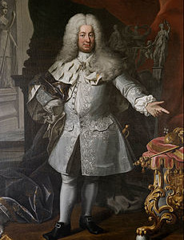
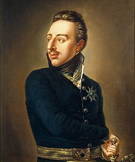

RIP BOZO
Christian Tyrann
Tyrann meaning "the tyrant" this dane was only king for a little over a year before being kicked out by swedish rebellions
Karl IX
After taking power from his brother-in-law Charles IX reigned over a period of constant war, but court politicking had not prepared him as general, losing battles to superior commanders.
Frederik I
becoming king by marrying the swedish queen, Frederik spent most of his time partying and very little time actually ruling, marking three decades of Sweden doing very little
Gustav IV Adolf
Gustav IV tried to be a warring general seizing on the opportunity of the napoleonic wars, but was just not competent. After losing Finland he was deposed in a coup by his own soldiers.